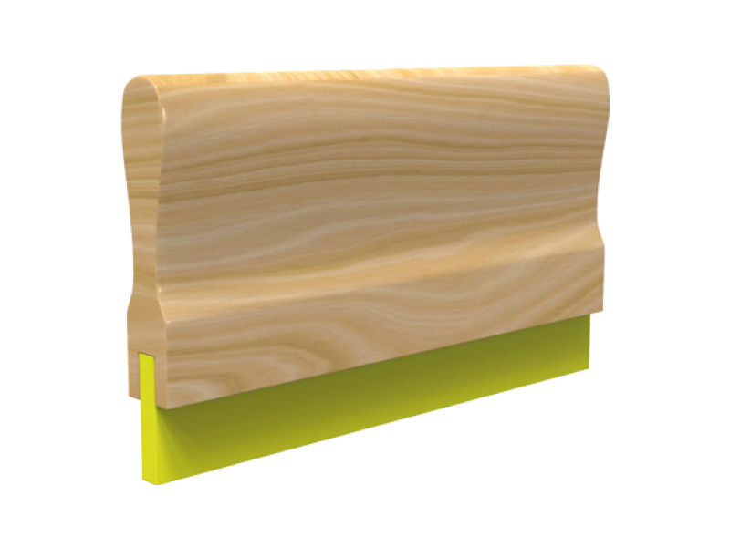

Design is NOT Art


Sarah Zhang
The discourse surrounding the relationship between design and art has been a timeless debate. Spend time with artists and designers alike, a surefire way to stir the pot would be to equate design to art, or vice versa. This collection of texts explores different facets of this fraught relationship and how it has evolved over time with the advent of technology, each generation more sophisticated than the next.
The earliest work is by Philosopher Walter Benjamin, ‘The Work of Art in the Age of Mechanical Reproduction’ in 1935. In his essay, Benjamin explains that ‘mechanical reproduction’ is not a modern invention as artists have historically copied master artists and printmaking processes have been around for centuries. However, he argues that mechanically reproduced art lacks uniqueness (aura) and artistic authenticity.
The 1966 book, ‘Design as Art’ is featured in this collection. Written by Bruno Munari, an Italian multidisciplinary artist and designer who argues that the designer is the modern day artist, as the ‘pure arts’ continuously move further away from the public realm. It is modern design that remains accessible and enjoyed by the general public. The book delves into artistic methods a designer can use, accompanied with illustrations and diagrams.
The last text featured is a contemporary article written in 2014 in Art in America titled ‘The Museum Interface’ that consists of a conversation between two designers working in the art industry, Sarah Hromack and Rob Giampeitro. The two assess the impact technology and digital media has had on cultural institutions. This article covers a myriad of themes such as website interfaces, online social interaction and technologies that are or might be implemented such as AR/VR.